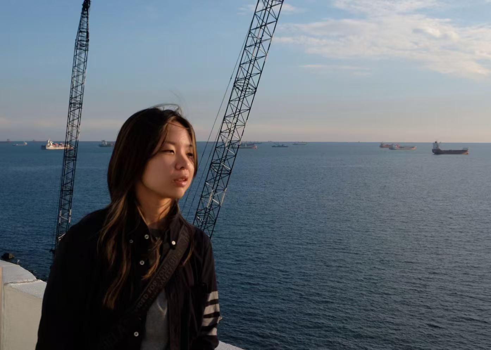
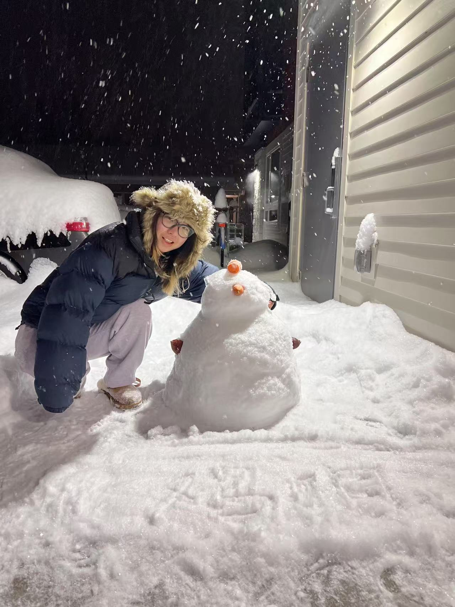
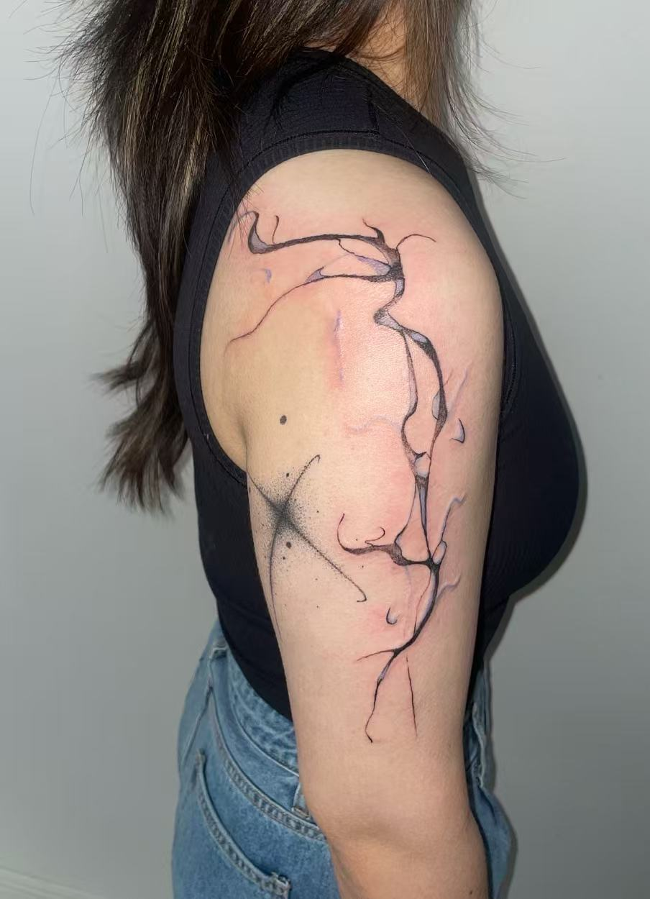
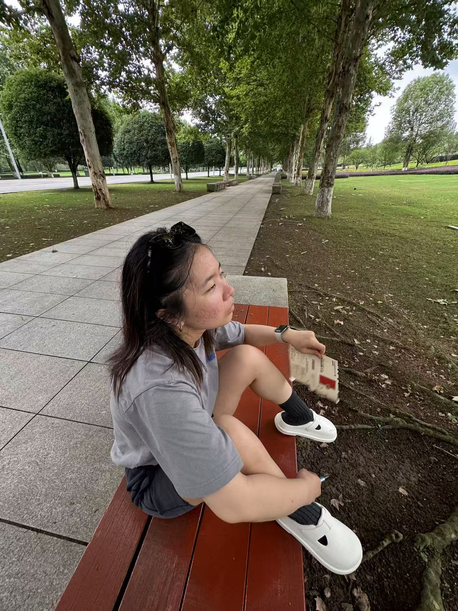
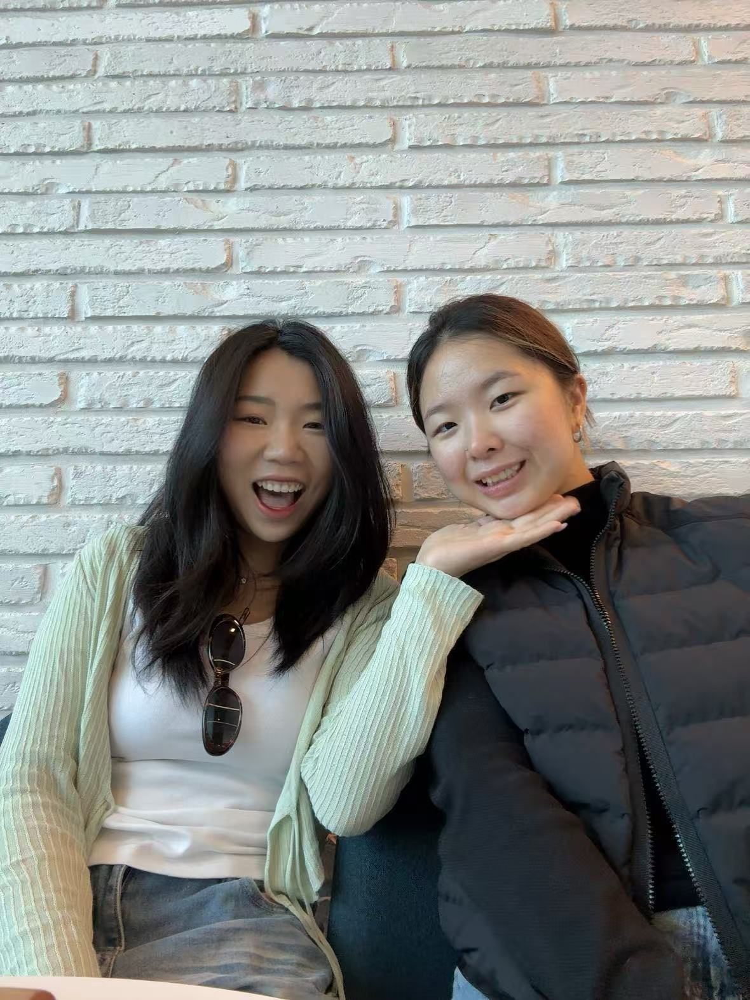
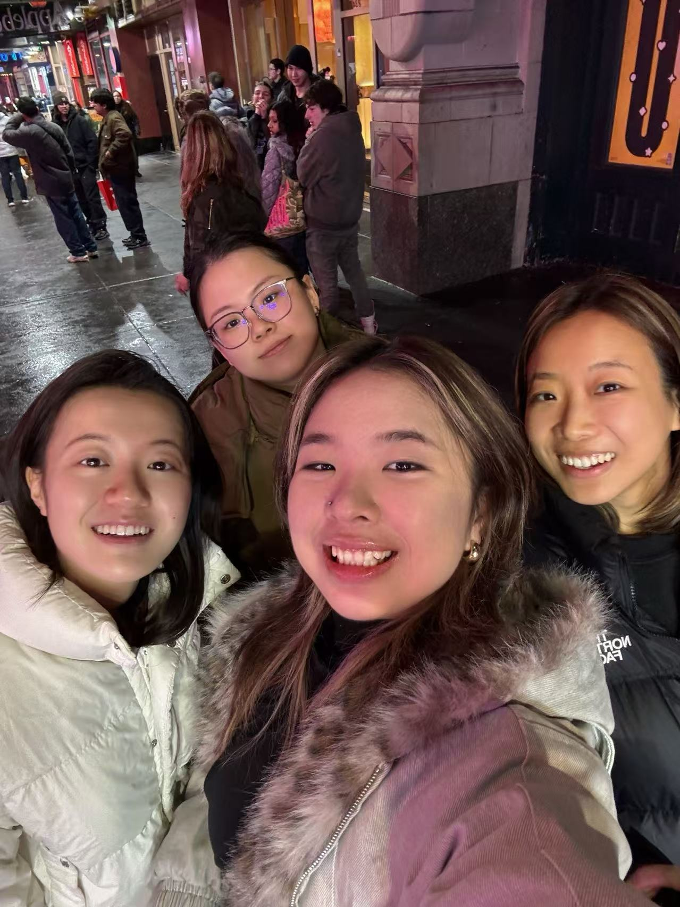
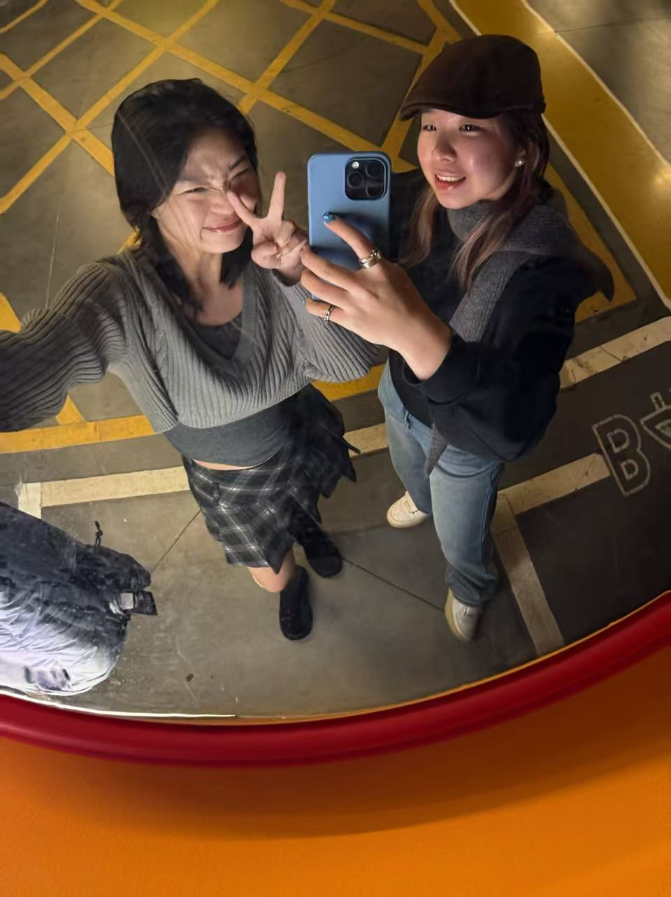
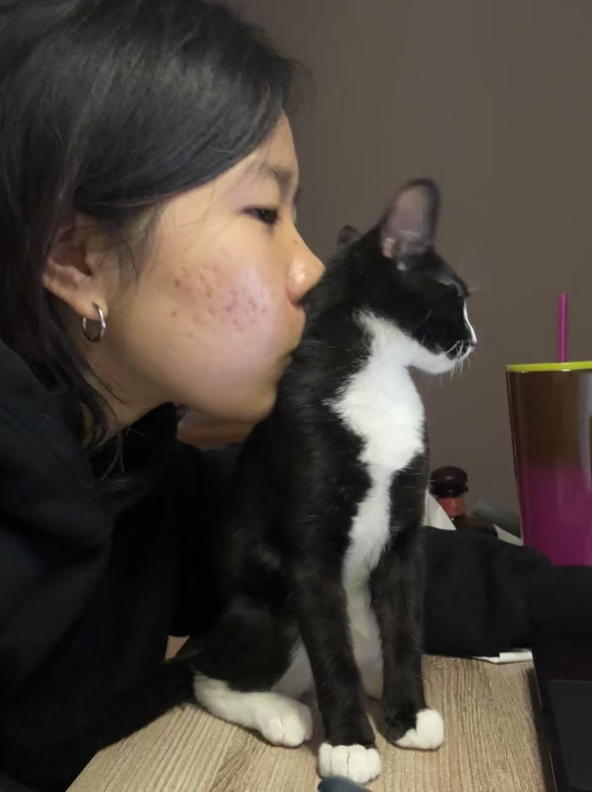
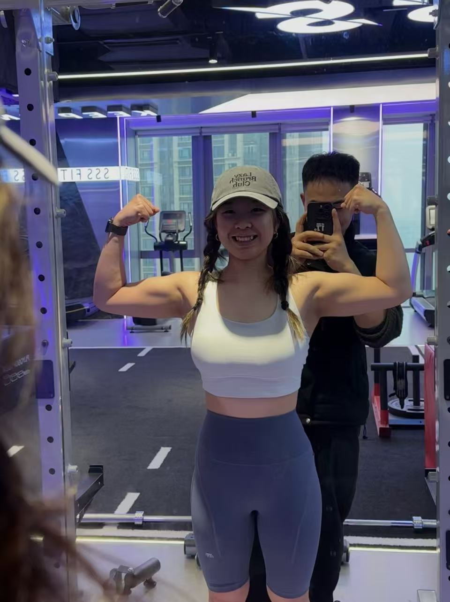
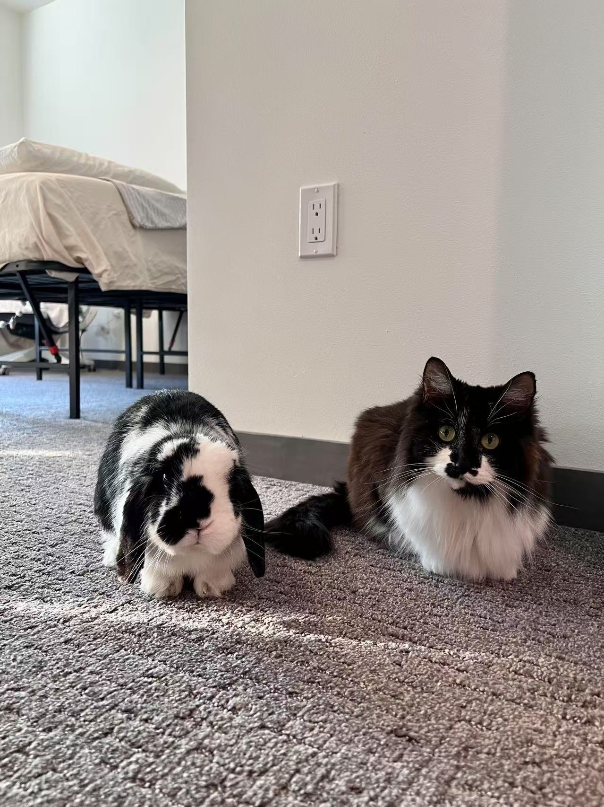

I’m not sure I’m human.
Not in the way people expect it.
Maybe I’m just air — watching, feeling, drifting.
My last name comes first, as is tradition in Chinese culture.
The second character, Shū, usually means "comfort" or "relief." But break it down and you'll find two parts: one means "to let go," the other means "to give."
The final character? It means "the people." So technically, my full name reads something like: let go, give, for the people.
I knew the literal meaning growing up, but I never thought much of it. Funny how it only started to make sense after I chose social work.
How my experiences in two vastly different worlds shaped how I see myself — and stay with myself



I’ve lived between two completely different worlds — the snowy stillness of Madison and the heat and pulse of Chongqing. My hometown only snowed once in 19 years. In Madison, I spent four winters walking across the frozen Mendota Lake.
After graduating college, I returned to China for a year. That’s when I started asking real questions — like where I want to build a life, what’s worth letting go of, and what actually matters.
I didn’t grow up thinking I’d become a social worker. I didn’t think I’d ever speak this much truth out loud. But over the past two years, life stopped giving me the option to stay quiet.
For as long as I can remember, my home carried tension. My mother endured domestic violence for decades, long before I knew what to call it. One night, when I was 14, she ran into my room, my father close behind. They circled my bed, yelling and grabbing, while I sat frozen. She climbed onto the mattress, called out my name, and begged me to save her. I was too young to protect anyone, yet too aware to forget.
In May 2023, I graduated from college. I didn’t want to return home, but I had no choice. The company offering me an interview quickly backed away after discovering I’d need sponsorship to work legally in the U.S.
That fall, my grandmother passed away. I held her hand until it turned cold. Days later, my bunny Phil—my first pet, the emotional glue in a four-year relationship—died suddenly. Soon after, the relationship itself ended. Through all of this, I couldn’t tell my family anything. To them, I was their good, straight daughter stuck in the U.S. because of COVID—still the perfect student they always expected me to be. They didn't know the truth: that I’d long realized I liked girls, that my home in Madison felt safer than the one I had with them, and that I stayed away because I feared what they might think.
The losses piled up quickly, and the ground beneath my feet felt increasingly unstable. Meanwhile, my parents began discussing divorce, yet they still expected me to mediate—to maintain the illusion of peace. I was falling apart quietly, inside a house where I’d never felt safe, holding grief nobody knew how to name.
Finally, in October, I left. I flew to Busan to stay with my best friend, spending hours by the ocean, reflecting. I had no clear plans, only pressing questions: What do I truly want to do? What’s the core value that remains unshaken, no matter how much I lose?
Then I knew—I would pursue social work. Because I’ve lived in spaces where nobody knew how to ask for help, and I want to be the one who hears the silence and responds.
I don’t know where this road ends, but I’m learning to walk it—with softness in my step, truth in my voice, and eyes open for those walking beside me.
My islands, Inside-out.

Sarah, my fiancée.

Friends in New York.
Xinwei, Yun, Me, Eda

Friend in Busan.
She is a kind of harbor.

Poni.
She watches me like a little therapist who charges in kibble.

Torturing my body.

Phil and Tahani.
Two fluffies who built my first home.
Some chapters were redacted by survival instinct...